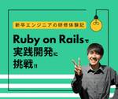

シー・エス・エス イノベーションラボ（ブログ）
https://blog.css-net.co.jp/
シー・エス・エス イノベーションラボ（ブログ）
フィード

新卒エンジニアの研修体験記｜Ruby on Railsで実践開発に挑戦！
シー・エス・エス イノベーションラボ（ブログ）
みなさんこんにちは。株式会社シー・エス・エス、プロダクト・サービス事業部の2年目、ハニーです。 プロダクト・サービス事業部は、主に自社プロダクト（Qube）の開発・運営や、新しい技術（特に生成AI）の研究開発・検証など、システム開発の枠を超えた幅広い技術・サービス領域を推進している部署です。今回は、私が入社1年目でこの部署に配属されてから行った、2か月間の研修についてお話ししたいと思います！ 最初の1ヵ月は、RubyとRuby on Railsの学習 Ruby Ruby on Rails 実践力を磨く！残り1か月はRuby & Ruby on Railsで開発演習 問題出題システムの作成 発表…
5日前

Amazon CognitoとPythonで簡易的なシングルサインオンを実現する
シー・エス・エス イノベーションラボ（ブログ）
こんにちは、デジタル戦略開発課のaaです。本日は、スキルチェンジプロジェクトを経て、実業務においてAmazon Cognitoを利用する機会がありましたので、使用した際の手順について解説します。 １．Amazon Cognitoとは ２．今回どのように使用したか ３．実施手順 3-1.アカウントが既に登録されているか検索 3-2.登録されていない場合、アカウント登録を行う 3-3.トークンの取得を行う*1 ４．最後に ５．参考 ６．この記事を書いた人 １．Amazon Cognitoとは Amazon Cognitoとは、アプリケーションの認証・認可を行うためのフルマネージドサービスです。ユー…
20日前
手書き伝票のデジタル化！AI-OCRを活用することでコスト削減と業務効率化が叶うワケとは
シー・エス・エス イノベーションラボ（ブログ）
皆さんこんにちは。株式会社シー・エス・エス、デジタル・マーケティング部のサットンです。皆さんは手書き伝票の処理に、時間と手間を感じていませんか？そこで今回は、AI-OCRという技術をご紹介したいと思います！AI-OCR技術を活用することで、手書き伝票のデジタル化を効率的に進め、コスト削減と業務効率化を叶えられるんです。AI-OCRとは何なのか？そして、AI-OCRの導入メリットや、手書き伝票だけじゃない具体的な活用方法、製品選定のポイントや導入ステップなどを解説していきたいと思います。 AI-OCRとは？その仕組みと進化 AI-OCRとは AI-OCRの仕組み AI-OCRの進化と最新トレンド…
1ヶ月前
AWS LambdaとPythonで実現するPDF編集 ~reportlabとpypdfを活用した実務解説~
シー・エス・エス イノベーションラボ（ブログ）
こんにちは、株式会社シー・エス・エス、デジタル戦略開発課のaaです。本日は、スキルチェンジプロジェクトを経て、実業務において、AWS Lamda(Python)での開発機会がありましたPDF編集について解説します。 １．仕様要件 前提条件 環境 ライブラリインストール手順 ２．実施手順 2-1.雛形ファイルをダウンロード 2-2.編集内容を記載したPDFファイル作成 2-3.雛形ファイルと作成したファイルを重ね合わせPDFファイルを作成 2-4.作成したPDFファイルを1ファイルに結合 2-5.完成したPDFファイルをアップロード ３．PDF編集について ４．最後に ５．参考 ６．この記事を書…
1ヶ月前
Grokとは？Grok 3で何ができるのか、モデル別に徹底比較
シー・エス・エス イノベーションラボ（ブログ）
みなさん、こんにちは。株式会社シー・エス・エスのES開発部、かわらです。 みなさんも日常生活で耳にタコができるほど聞いていると思いますが、日々AIが進歩していますね。ついこの前まで、質問にとんちんかんな答えを返す様を面白がっていたと思ったら、あっという間に質問内容の意図に沿ってしっかりした回答を返すようになっています。 今年度の全社総会で、壇上に上がる偉い人達の大半がAIを話題に挙げていたのも個人的に印象に残っています。 ▼シー・エス・エスグループの全社総会の様子、各部門長からの発表内容 そんなAIの話題で持ちきりの昨今ですが、先日、xAI社が最新AIモデル「Grok 3」を発表したので、今回…
2ヶ月前
SQL用語集 ～初めてのSQL実務～
シー・エス・エス イノベーションラボ（ブログ）
みなさん、こんにちは。アプリケーション開発課のいだちゃんです。 現在お客様先に常駐しており、他の会社さんと協力しながらプロジェクトを進行しています。そこで一緒に作業している方と、SQLについての疑問点と調べた結果をリスト化しました。共同作成したいわゆる用語集を、初の常駐先で仲良くなった思い出の記録として「備忘録的」に一部を抜粋&補足しました。 サブクエリ サブクエリの特徴 サブクエリの種類 条件分岐 - CASE 条件分岐 - CASE の特徴 条件分岐 - CASE の種類 結合 join joinの特徴 joinの種類 union unionの特徴 unionの種類 おまけ oracleの…
2ヶ月前
業務で使用したデータ・ファイル転送ソフトのご紹介
シー・エス・エス イノベーションラボ（ブログ）
こんにちは。株式会社シー・エス・エス、ファイナンシャル・ソリューション開発部のＫです。 システム開発を行う中で、関わりのあったデータ・ファイル転送ソフトを紹介します。 いくつか見てきた中で使い易そうなものについては少し詳しく説明したいと思います。 １．業務の中で関わりのあったデータ・ファイル転送ソフト ACMS MQ HULFT ２．使い易いと思えたデータ・ファイル通信ソフト HULFTが一番使い易い ３．最後に：転送ソフトは目的や環境によって選ぼう この記事を書いた人 １．業務の中で関わりのあったデータ・ファイル転送ソフトACMSDAL（データ・アプリケーション）が提供しているACMSは、企…
2ヶ月前
プロンプトを考えなくて良い！無料で使える最新画像生成AIサービス Drop AIを使ってみた
シー・エス・エス イノベーションラボ（ブログ）
こんにちは。PS事業部のしゃるたんです。 モンハンの発売日直前でモチベーションが高まる今日この頃です(*^^)vさて本日はサットンさん（当社のデジタルマーケティング担当）から画像生成のサービスを教えてもらったので、使ってみた感想を皆さんに伝えていきたいと思います(=ﾟωﾟ)ﾉｶﾞﾝﾊﾞﾙｿﾞ! 最新サービス、Drop AIとは？ 本日ご紹介させていただくのは、Drop AI(https://drop4i.com/)というサービスになります。どうやら2025年2月5日に開始したばかりのサービスみたいですね(・ω・)ｻ-ｲｼ---ﾝ♪1日に無料枠で作れる画像は4枚なので、業務利用の方は有料プランに…
2ヶ月前
ローコード開発とは？メリット・デメリットとOutSystemsのご紹介
シー・エス・エス イノベーションラボ（ブログ）
みなさん、初めまして。株式会社シー・エス・エスのqwertyです。 突然ですが、ローコード開発という手法をご存知でしょうか。 ローコード開発とは、最小限のソースコードでアプリケーションを開発する手法のことです。近年では、このローコード開発という手法が注目されつつあります。 今回は、ローコード開発の概要と、私が現在扱っているOutSystemsというローコード開発用ツールについてご紹介させていただきます。 1. ローコード開発 1-1.ローコード開発とは 1-2.ローコード開発が注目される背景 1-3.ローコード開発のメリット・デメリット 【メリット】 【デメリット】 2.OutSystems …
3ヶ月前
量子コンピューターってなんだ？！通常のコンピューターとの違いや課題などをわかりやすく解説
シー・エス・エス イノベーションラボ（ブログ）
おひさしぶりです。株式会社シー・エス・エス、ES開発部のだいです。 私たちが日常で使っているコンピューターは、クラシックコンピューターと呼ばれています。最近その限界を超える可能性を秘めたテクノロジーとして、量子コンピューターが注目を集めています。量子コンピューターは、従来のクラシックコンピューターでは解決が難しい問題に対して革命を起こすことが期待されています。 今回は、大学で物理学を専攻していた私と量子コンピューターについて一緒に学んでいきましょう！ 通常のコンピューターと量子コンピューターの違い 量子コンピューターの計算能力が高い理由 重ね合わせ 量子もつれ 量子コンピューターの得意分野 1…
3ヶ月前
BIツールとExcelの違い～QuickSightと比較してみた～
シー・エス・エス イノベーションラボ（ブログ）
こんにちは。株式会社シー・エス・エス、TC部アプリケーション開発課のMAです。 理系の大学を去年卒業し、現在Amazon Web Servicesで提供されているBIツール「Amazon QuickSight」（以下：QuickSight）を用いたデータ分析画面の提供業務に携わっています。 QuickSightを使い始めてまだ数か月ですが、今回はデータ分析に広く使われているMicrosoft Excel（以下：Excel）との違いを、具体的な使用場面で比較していこうと思います。 「そもそもBIツールって何？」という方はこちらをご覧ください！ blog.css-net.co.jp 1. Exce…
3ヶ月前
Python3エンジニア認定基礎試験の勉強方法～これで合格できた～
シー・エス・エス イノベーションラボ（ブログ）
みなさん、こんにちは。 入社2年目のアプリケーション開発課に所属しているmiです。 最近初めて技術系の資格を取得することができたため、そのことについてお話ししようと思います。 今回は「Pythonエンジニア認定基礎試験」というPython初心者向けの試験を受けてみました。 Pythonの資格を取ろうと思った理由 どのように勉強したか 休日がっつりではなく、平日の就寝前や通勤時間などを使い分散して勉強する 眠くなりがちな人は、演習問題をたくさん解けば良い 試験結果 最後に：参考書は参考程度に留めておく この記事を書いた人 Pythonの資格を取ろうと思った理由 Pythonの資格を取ろうと思った…
3ヶ月前
中小企業のためのデジタル化推進ガイド：具体的なステップと成功の鍵
シー・エス・エス イノベーションラボ（ブログ）
皆さんこんにちは、株式会社シー・エス・エスのサットンです。この記事では、中小企業がデジタル化を成功させるための具体的なステップと、その重要性を解説します。デジタル化には、業務効率化、コスト削減、人材不足解消など、様々なメリットがあるんです。 そもそもデジタル化って何？ デジタル化とDX化の違い なぜ中小企業にデジタル化が必要なのか？ デジタル化が中小企業にもたらすメリット 業務効率化 コスト削減 人材不足の解消 顧客満足度向上 中小企業がデジタル化を進めるためのステップ 1. 自社の課題と目標を明確にする 2. 具体的なデジタル化計画を策定する 3.社員への教育と意識改革 デジタル化を成功させ…
3ヶ月前
QuickSightのハンズオン ～初心者におすすめ3選～
シー・エス・エス イノベーションラボ（ブログ）
みなさん、こんにちは。テクノロジー・コンサルティング部のなっちゃんです。 2024年8月から現在の部署に配属されたばかりの新卒社会人です。 私は大学時代に生物系を専攻しており、プログラミングも高校の情報の授業でやったきりという全くの未経験でIT企業に入社しました。 4か月の研修を経て、初めて配属された案件で使用していたAWSのAmazon QuickSight（以下：QuickSight）というBIツールの学習方法について、まとめたいと思います。 まずはBIツールとは何なのか説明していきます！ BIツールとは QuickSightとは QuickSightの学習に使用したハンズオン 1.Ama…
4ヶ月前
RPAとは ～活用例やメリット・デメリットを紹介～
シー・エス・エス イノベーションラボ（ブログ）
皆さんこんにちは！株式会社シー・エス・エス、銀行システム開発課のS.Yです。今年からRPAプロジェクトに参画し、ツールの作成や運用保守等の業務を行っています。この記事では、私のプロジェクト経験を踏まえて、RPAの基本や活用例、導入のメリット・デメリットなどを紹介します。 この記事が、少しでも皆さんの業務改善のヒントになれば幸いです。 RPAとは RPAの具体的な活用イメージ 具体例1：紙帳票を集計する作業 具体例2：各店で行っている顧客情報の照会 RPAに向く仕事、向かない仕事 RPAに向く仕事 RPAに向かない業務 RPA導入のメリット・デメリット RPAのメリット RPAのデメリット まと…
4ヶ月前
イニシャルDの名言から学ぶ！働く大人のためのモチベーションアップ術
シー・エス・エス イノベーションラボ（ブログ）
みなさん、こんにちは。株式会社シー・エス・エス、データアナリティクス課の針井です。 今回は、業務を通じて身に付けた私なりのモチベーションアップ術についてお話させていただきます。 1. 私たちはみな走り屋 2. 走り屋たちの名言・格言 「一万一千回転までキッチリ回せ!!」 by藤原文太 「上等じゃねーか!!コーナー2コも抜けりゃバックミラーから消してみせるぜ!!」 by高橋啓介 「ハンドルはなるべくきらないで曲がった方が速いのか...!?」by藤原拓海 「オレはどんなバトルからも逃げないって決めた...ひとつひとつは先へつながっていくんだ!!」by藤原拓海 「心臓が縮みあがるような瞬間を幾つも飲…
4ヶ月前
システムテストの実施 ～それぞれの工程で重要な点のまとめ～
シー・エス・エス イノベーションラボ（ブログ）
こんにちは。株式会社シー・エス・エス、保険システム課のちみりよです。 システムエンジニアとしてプログラミングや保守業務に携わってきたものの、テスト業務には関わったことがないという方も多いのではないでしょうか。 実際に、私はこれまで保守・運用・コーディングの業務を担当していたため、今回初めてシステムテストを経験をしました。 そこで、今回はそんな私が一連のテスト実施までの過程で気づき・学んだことを要点を絞ってお伝えできればと思っています。 ※自分が担当した現場での作成方法につき、細かな部分は配属先によることを最初に記載しておきます。 1.システムテストとは 1-2.システムテスト 全体の流れについ…
4ヶ月前
【画像生成AI】AIモデルの比較と特徴まとめ
シー・エス・エス イノベーションラボ（ブログ）
こんにちは。株式会社シーエスエス、PS事業部のしゃるたんです。 今回も前回に引き続き、画像生成についてお伝えしていきます。 前回はImageFxというサービスをお伝えしたのですが、AIモデルの説明が抜けていたのでご紹介したいと思います。（前回の記事： ImageFXの使い方とコツ） 画像生成における主なAIモデルとそれぞれの特徴 DALL-E3 Stable Diffusion-V3 Midjourney Imagen 3 同じプロンプトでどのように結果が変わるのか比較 動物を表現 オフィス風景を表現 人物を表現 建物を表現 まとめ：画像生成AIは使えるけど、再現性はない 原型を変えずに画像調…
4ヶ月前
【ITエンジニアがお伝えする】ストレスの原因と効果的なストレス解消法
シー・エス・エス イノベーションラボ（ブログ）
みなさん、こんにちは。 株式会社シー・エス・エス、証券システム開発二課のこすけです。 日々の仕事の中で避けては通れないストレス。 現代社会はストレス社会なんて言われたりもしていますね。 実際に、私の周りでもストレスが溜まって心身に異常をきたしたという人を結構見かけます...(￣▽￣;) 厚生労働省「労働安全衛生調査（実態調査）令和5年度」では、私がいるIT業界に限らず様々な業界において、仕事に関することで強い不安、悩み、ストレスを感じることがある労働者の割合は82％にもなるそうです。 この記事では、ストレスとはどういうものなのか、ストレス解消には何が効果的か、さいごに、私が実践しているメンタル…
5ヶ月前
【画像生成AI ImageFXの使い方】欲しい画像を生成するコツ
シー・エス・エス イノベーションラボ（ブログ）
こんにちは。PS事業部のしゃるたんです。 最近は帰ったらドラクエ３のリメイク版を毎日やっています。小学生の時にファミコン版をやっている身としては感慨深い(-。-)y-゜゜゜ﾎﾞｽﾌｴﾄﾙ さて、そんな前振りはさておき今回は画像生成にチャレンジしたいと思います。 試してみるサービスはGoogleの「ImageFx」となります。 ImageFx：https://aitestkitchen.withgoogle.com/ja こちらはGoogle自動認証で簡単に登録できて、無料で使えるサービスとなります。さっそく使っていきましょう(*^^)vｶﾞﾝﾊﾞﾙｿﾞ! Googleの画像生成AIサービス、I…
5ヶ月前
時間のない社会人向け！資格取得のための勉強法
シー・エス・エス イノベーションラボ（ブログ）
皆さんこんにちは。株式会社シー・エス・エス、ファイナンシャル・ソリューション部の高岡です。主に証券系システムの開発業務に着手しております。 このブログでは、私が資格勉強したときに感じたことや、心掛けていたことをまとめたいと思います。ほとんどの企業が資格取得を推奨していると思いますが、その反面、日々の業務が忙しい中で資格取得に乗れない方が多いと思います。業務外では体を休めたり趣味に没頭したいですよね。プライベートの時間を削ってまで資格取得するメリットなんてあるのかと思われる方もおられると思いますので、資格取得のメリットと課題、そしてプライベートの時間を消費しない勉強法をお伝えします。実際に私は、…
5ヶ月前
2025年の崖とは？乗り越えるためのレガシーシステム脱却方法とDX推進へのステップ
シー・エス・エス イノベーションラボ（ブログ）
皆さんこんにちは。株式会社シー・エス・エスのサットンです。2024年も残りあとわずか！いよいよ2025年の始まりですが、2025年は何かと話題の年ですよね。国民の5人に1人が後期高齢者（75歳以上）になり、労働人口の不足や医療体制のひっ迫などが予想されている2025年問題や、DX（デジタルトランスフォーメーション）を推進できず国際競争力を失うとされる2025年の崖。ネットでは2025年7月5日に大災難が起こるなどと騒がれており、2025年にいったい日本はどうなってしまうのかと心配になります...。 2025年問題やネットの噂も気になるところですが、今回は2025年の崖に焦点を当て、企業はどのよ…
5ヶ月前
AIチャットボットをNoteBookLMで作る方法と注意点
シー・エス・エス イノベーションラボ（ブログ）
こんにちは。PS事業部のしゃるたんです。 今回はAIチャットボットを5分で作ってみようと思います。(´ω｀*)ﾔﾚﾊﾞﾃﾞｷﾙ使うサービスは『NoteBookLM』となります。 NoteBookLMとは？ NoteBookLMでAIチャットボットを作る方法と注意点 NoteBookLMはセキュリティ面も安心できる 【まとめ】NoteBookLMは欠点こそあるものの、数分でAIチャットボットを作れてしまうのは凄い この記事を書いた人 NoteBookLMとは？ NoteBookLMとはGoogle社が開発したオンラインノートで、自分でアップロードしたドキュメントや資料のみがデータとして蓄積され、…
5ヶ月前
ITエンジニア流！職場でのコミュニケーションで大切なこと ～仕事を円滑に進めるために～
シー・エス・エス イノベーションラボ（ブログ）
こんにちは、株式会社シー・エス・エスのdazyuです。不動産関連の会社にて、システムの保守・開発を担当しています。 最近洋画のKingsmanを見ました。スパイ映画なのですが、謎解きよりもアクション重視の作品でした。 中でも印象に残ったシーンはアクション前の名言、「manners maketh man.(礼節が人を作る)」です。主人公エグジーの人生を変えるスパイの師、ハリーの言葉なのですが、その生き様を表すような台詞でかっこよかったです。 まだ第1作しか見ていないので、2作目以降が楽しみです。 さて、今回は仕事を円滑に進めるために、コミュニケーションについて大切なことを考えてみたいと思います。…
5ヶ月前
【SIer・システム開発会社 選び方ガイド】3つのポイントと注意点で失敗しない
シー・エス・エス イノベーションラボ（ブログ）
皆さんこんにちは、株式会社シー・エス・エスのサットンです。この記事は「システムの開発・導入で業務効率化したい」「DX推進をしたい！」という企業の情シスさんや経営層の方々に向けた内容です。システム開発会社は、企業の業務ニーズに応じたシステムを設計・開発・保守するサービスを提供する会社で、顧客の要望をヒアリングし、要件定義、設計、開発、テスト、運用といった一連の工程を担います。システム開発を依頼する際、どの開発会社を選ぶべきか迷うことがあると思いますので、システム開発会社を選ぶ際の重要なポイントや注意点を紹介したいと思います。最適な開発パートナーが見つかるヒントになれば幸いです。 システム開発会社…
5ヶ月前
【社会保険の基礎知識】保険料や健康保険で得られるサービスについて
シー・エス・エス イノベーションラボ（ブログ）
こんにちは。株式会社シー・エス・エス、エンタープライズ・ソリューション開発一課の二年目、NTです。 私は配属から約一年、社会保険システムの保守をしています。社会保険のシステムを担当するにあたり、業務についてしっかり把握する必要があります。そこで得た知識を、今回皆様にご案内しようと思います。社会人になると、初めて自分の給与から税金や社会保険料が引かれて「こんなに引かれるの！？」と思ったことのある人も多いのではないでしょうか。ただ、それでもそのお金が何に使われていて、自分たちにどのようなサービスが提供されているのか調べた人は少ないと思います。実際、私も業務を通して社会保険について知識を増やしてきま…
5ヶ月前
生成AIを検証してみた件 ~プレゼン資料を作れるか~
シー・エス・エス イノベーションラボ（ブログ）
こんにちは。PS事業部のしゃるたんです。今回はプレゼン資料の作成に取り組んでいきたいと思います。プレゼン資料を作るツールとして、CanvaやGamma、Felo.AIなど色々あって何を使ったらいいか迷いますが、今回はClaude（クロード）＋イルシルで挑戦したいと思います。 Claudeは、アメリカのAIスタートアップ企業「Anthropic」が開発した最先端の生成AIモデルで、皆さんおなじみChatGPTと同じように、対話型のインターフェースで質疑応答ができます。イルシルとは、生成AIでスライド資料作成を自動化し、誰でも短時間で簡単にスライドやパワポが作れるサービスで、なんとデザインは1,0…
6ヶ月前
【不動産会社のデジタル化】第一歩の踏み出し方
シー・エス・エス イノベーションラボ（ブログ）
こんにちは。デジタル・マーケティング部の水信です。ここ数年、デジタル化による業務効率化や顧客満足度の向上が期待されていますが、どこから始めたら良いか様々な業種の方からお問い合わせを頂きます。不動産会社もデジタル化の波に直面しているようです。本記事では、不動産会社のデジタル化における重要なポイントと取り組み方をご紹介します。 不動産会社のデジタル化の必要性 アナログからデジタルへのシフト 人手不足に対する解決策 業務の非対面化の重要性 デジタル化によるメリット 業務効率化 労働環境の向上 顧客満足度の向上 不動産会社のデジタル化成功事例 三井不動産のデジタル化戦略 東急不動産のイノベーション デ…
6ヶ月前
ウォーターフォール開発の工程と案件遂行のコツ
シー・エス・エス イノベーションラボ（ブログ）
はじめまして。ファイナンシャル・ソリューション開発部の赤坂です。 私は主に案件遂行の仕事をしているのですが、案件遂行はプロジェクトの全体像が見えないとなかなか難しいものがあります。そこで今回は、プロジェクト（＝案件）の基本となるウォーターフォール開発を解説しながら案件遂行で気を付けることを書いていこうと思います。 １．ウォーターフォール型開発とは？ ２．ウォーターフォール型開発の主な工程 ３．要件定義 WBSを作成し、概要とスケジュールをメンバへ説明 ４．基本設計 この段階でテスト概要や実施リスクなども考える ５．開発・単体テスト ６．結合テスト・総合テスト 丁寧な橋渡しと進捗管理がカギ ７．…
6ヶ月前
Google Formsでフォームを自社サイトに、簡単にかっこよく実装する方法
シー・エス・エス イノベーションラボ（ブログ）
こんにちは、テクノロジーコンサルティング課のゴマ太郎です。今回は Google Forms を用いてフォームを自社サイトに、簡単にかっこよく、実装する方法を紹介します。 いざ自力で実装しようとすると、回答を蓄積する DB の設定や回答があった際の通知処理など、フォームのフロントエンド実装の他にも考えることが多く出てきます。そのようなバックエンドの面倒事については考えず、楽をしたいという方に向けての記事になります。 1. Google Forms の実装パターン 1-1. 実装パターン 1-2. 各パターンの比較 2. 実装方法 2-1. ① Google Forms に遷移させる 2-2. ②…
6ヶ月前